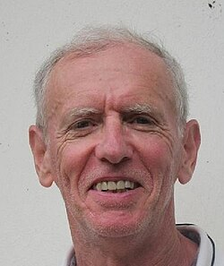
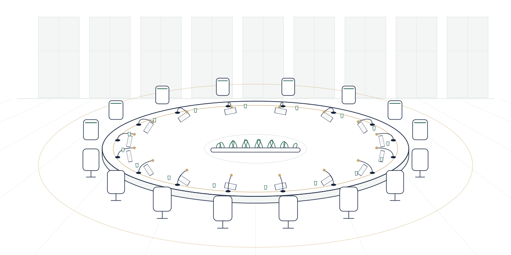

البناء القانوني للهجرة الناجمة عن التغيرات المناخية: من نشأة الظاهرة إلى تكييفها المعياري
تكييف التنقلات البيئية، والتمييز بين الهجرة الاختيارية والنزوح القسري، والنقاشات حول الاعتراف القانوني باللاجئين المناخيين.

كلية العلوم القانونية والسياسية بطنجةجامعة عبد المالك السعدي — المملكة المغربية
العد التنازلي للافتتاح
الجلسة الافتتاحية الرسمية · الثلاثاء 19 يناير 2027 · الساعة 09:30 (بتوقيت المغرب، GMT+1)
المؤتمر
في ظل تزايد حدة التغيرات المناخية وتكاثر الكوارث البيئية، أصبحت تنقلات السكان من أبرز التحديات التي تواجه المجتمع الدولي. فالجفاف والفيضانات والتصحر وارتفاع مستوى سطح البحر تطرح تساؤلات حول الحماية القانونية للساكنة المعنية.
لا يعترف القانون الدولي للاجئين، القائم أساسا على اتفاقية جنيف لسنة 1951، بالأسباب البيئية سببا مستقلا للحصول على صفة اللاجئ. ومن ثم تبرز الحاجة إلى إعادة التفكير في ملاءمة الآليات القائمة، وإلى دراسة إسهام الحماية التكميلية المستمدة من القانون الدولي لحقوق الإنسان والأدوات الإقليمية والقانون الدولي للبيئة.
يجمع هذا المؤتمر، الذي تحتضنه كلية العلوم القانونية والسياسية بطنجة على مدى ثلاثة أيام، جامعيين وباحثين ومتخصصين في القانون الدولي وحقوق الإنسان والبيئة، مع عناية خاصة بالمنظورات الإفريقية والمتوسطية.
تحليل قدرة الإطار الحالي، ولا سيما اتفاقية جنيف لسنة 1951، على الاستجابة لحالات النزوح المناخي والبيئي، ودراسة إمكانيات التفسير المتطور للأدوات القائمة.
دراسة إسهامات القانون الدولي لحقوق الإنسان وقانون الهجرة والقانون الدولي للبيئة والأدوات الإقليمية في حماية الأشخاص النازحين.
التفكير في ملاءمة قانون اللاجئين وفي أدوات جديدة، في ضوء نداء ليموج لسنة 2005 ومشاريع الاتفاقيات التي أعدها المركز الدولي للقانون المقارن للبيئة (CIDCE).
تشجيع التبادل بين الجامعيين والباحثين والمؤسسات العلمية والهيئات المتخصصة، وتطوير تعاون مستدام في مجال النزوح المناخي والحقوق الأساسية.
إيلاء عناية خاصة للتحديات القانونية والمؤسساتية في الفضاءين الإفريقي والمتوسطي، مع تشجيع الحوار بين التجارب الإقليمية والآليات الكونية للحماية.
تحديد مسارات للتفكير ومقترحات، في ختام الأشغال، من شأنها إغناء النقاشات الأكاديمية والمؤسساتية حول مستقبل حماية الأشخاص النازحين.
الإطار العلمي
ينتظم المؤتمر حول أربعة محاور تتم دراستها على مدى ثلاثة أيام في ست جلسات علمية.
تكييف التنقلات البيئية، والتمييز بين الهجرة الاختيارية والنزوح القسري، والنقاشات حول الاعتراف القانوني باللاجئين المناخيين.
حدود اتفاقية جنيف لسنة 1951، والتفسير المتطور لتعريف اللاجئ، وآفاق الإصلاح، مع عناية خاصة بنداء ليموج لسنة 2005.
القانون الدولي لحقوق الإنسان، وقانون الهجرة، والقانون الدولي للبيئة، والحماية التكميلية؛ الأدوات الإقليمية الإفريقية، والتجارب الأوروبية، وتحديات الفضاءين الإفريقي والمتوسطي.
الأدوات الدولية الجديدة، والمسؤوليات القانونية والمؤسساتية للدول والمنظمات الدولية، والتضامن الدولي والعدالة المناخية، وإصلاح قانون اللاجئين أو اعتماد اتفاقية دولية خاصة.
ثلاثة أيام · ست جلسات · أربع وعشرون مداخلة
التوقيتات مقترحة إلى حين اعتمادها من اللجنة التنظيمية. تضاف أسماء المتدخلين ورؤساء الجلسات والمقررين بعد تأكيد مشاركتهم.
تُخصص هذه الجلسة لمناقشة الإشكالات العملية المرتبطة بتطبيق قواعد الحماية الدولية والإقليمية على حالات النزوح المناخي، من خلال تجارب قانونية وقضائية مختلفة، بمشاركة عدد من الأساتذة المتدخلين في الجلسات السابقة.
المساهمون
تتيح كل بطاقة الاطلاع على ملخص المداخلة وتفاصيلها. تضاف أسماء متدخلي المداخلات العلمية بعد تأكيد مشاركتهم.
المدير العلمي للمؤتمر — المغرب

أستاذ فخري للقانون · رئيس CIDCE — فرنسا
خبير تعينه المؤسسة

جامعة جندوبة، تونس
متدخل مقترح
كلية الحقوق بجامعة كاليفورنيا، سان فرانسيسكو، الولايات المتحدة الأمريكية
جامعة الحسن الثاني بالدار البيضاء، المغرب

باحث، CeDIE/EDEM، الجامعة الكاثوليكية بلوفان، بلجيكا · جمهورية الكونغو الديمقراطية
خبير تعينه المؤسسة
خبير تعينه المؤسسة
سيعلن عن متدخلين آخرين تباعا بعد تأكيد مشاركتهم.
التنظيم
يتولى الأعضاء التالية أسماؤهم التنظيم العلمي والعملي للمؤتمر.
باحثون في سلك الدكتوراه يشكلون المكوّن الدكتورالي لفريق التنظيم.


طلبة ماستر حقوق الإنسان، كلية العلوم القانونية والسياسية بطنجة، جامعة عبد المالك السعدي.

القيادة الأكاديمية
كلية العلوم القانونية والسياسية بطنجة، جامعة عبد المالك السعدي، المغرب
الإطار المؤسساتي
تشكل الكلية، التابعة لجامعة عبد المالك السعدي التي تعد من أبرز أقطاب التعليم العالي والبحث العلمي بشمال المغرب، فضاء للتكوين والتفكير في القانون والمؤسسات والعلاقات الدولية.
يعمق هذا الماستر، الذي ينسقه الدكتور عبد القادر مساعد، دراسة الآليات الوطنية والجهوية والدولية لحماية الحقوق الأساسية.
أكدت المؤسسة، التي يوجد مقرها بستراسبورغ، اهتمامها بالمؤتمر، واقترحت تعيين خبراء من شبكتها للمشاركة في الجلسات.
الموقع الرسمي ↗يرأسه الأستاذ ميشيل بريور، أستاذ القانون الفخري بجامعة ليموج، ويحظى المؤتمر برعايته العلمية. وسيقدم خلال الأشغال مشروع الاتفاقية الدولية لحماية الأشخاص النازحين لأسباب بيئية ومناخية الذي أعده المركز.
الموقع الرسمي ↗الدعم
دعم البحث العلمي والتعاون الدولي وحماية حقوق الإنسان
يعرض هذا القسم المؤسسات التي تسهم ماليا أو ماديا أو لوجستيا في تنظيم المؤتمر.
سيتم تقديم الشركاء الداعمين هنا بعد تأكيد مساهماتهم والإذن بنشرها.
الموارد
الوثائق الرسمية للمؤتمر. تنشر الصيغ المحينة هنا فور اعتمادها.
بالإنجليزية
بالعربية
بالإنجليزية
بالعربية
اليوم الثالث · الخميس 21 يناير 2027
المائدة المستديرة العلمية الدولية
من النقاش العلمي إلى بلورة مبادئ وتوصيات قانونية مشتركة

إعلان طنجة – 21 يناير 2027
المخرج العلمي الرئيسي المنتظر من المؤتمر: مشروع إعلان أكاديمي يعرض على المشاركين للمناقشة والاعتماد المحتمل، يستخلص المبادئ والتوصيات القانونية لمحاور المؤتمر الأربعة.
مشروع مقترح للنقاش – ليس إعلانا معتمدا بعد، ولا يشكل معاهدة دولية ملزمة قانونا.
اتصل بنا
باحث بسلك الدكتوراه في القانون العام وحقوق الإنسان
كلية العلوم القانونية والسياسية بطنجة
جامعة عبد المالك السعدي
البريد الإلكترونيsaadzilad@gmail.comباحث بسلك الدكتوراه في القانون العام وحقوق الإنسان
كلية العلوم القانونية والسياسية بطنجة
جامعة عبد المالك السعدي
البريد الإلكترونيsaida.achahboun2026@gmail.com